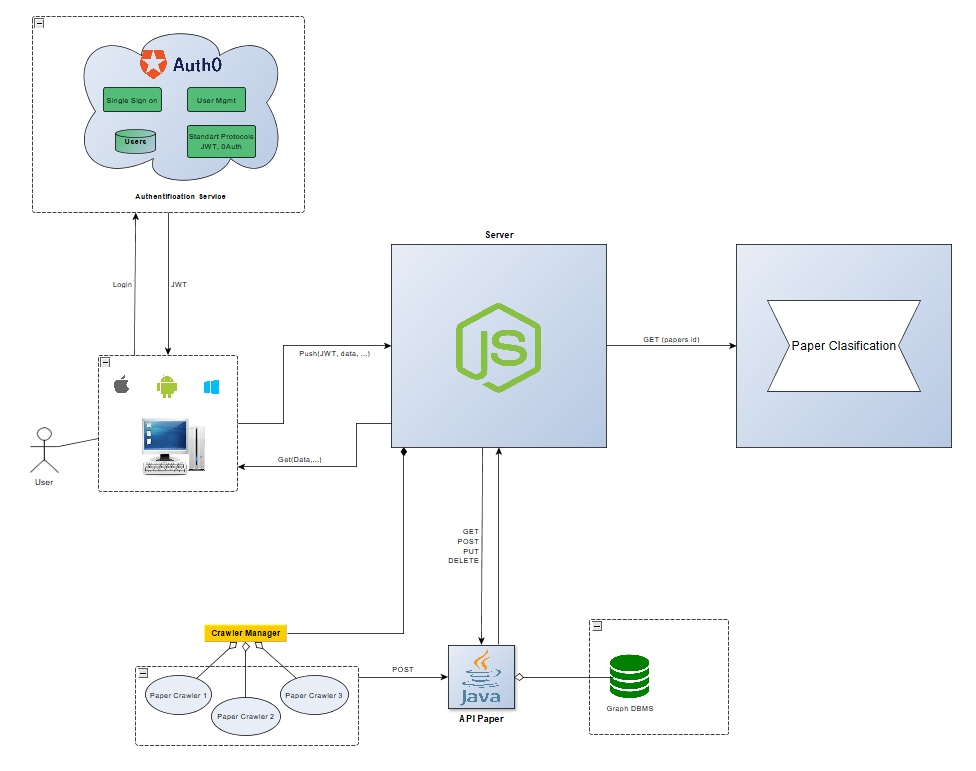

What is Scira?
Abstract
When writing academic papers, searching for related literature and managing documents/references can be a burden. We are developing a smart platform able to provide an innovative visual experience regarding the references between papers, their genealogy, and various information about (co-)authors. Additionally, the system will offer multple data/knowledge visualization solutions and filtering techniques using several refinements (publication year, subject, keywords, language).
Motivation
SciRA is a smart search engine for finding academic papers. Using the variety of filter that our application offers, you can make a precise search in order to find the best article for your academic paper. You can search for a certain papers by: University, publish date, name of the author, domain, etc.
Architecture
The application is based on restfull services:
- Paper search from the application internal storage (database)
- Paper crawling
- Paper sugestion
General Architecture diagram

The model Graph

SparQL query example


Future work
For the next component, we will build a classifier that will manage the detection
of the paper section. This clasifier will use the TF-IDF algorithm to asociate the paper
title to a vector of numbers wich represents the term frequencies weighted by the total
number of papers containing the computed frequencies.
The same algorithm will be used to compute the asociated TF-IDF vector for the section titles.
The decision of the title being chosen will be taken by the highest cosine similarity score
between the paper title TF-IDF vector and the section title TF-IDF vector.
Another future work will be the recommendation system based on the same features computed by
the TF-IDF algorithm and, for recommendation efficiency, after we crawl all the papers, we will
apply a clustering algorithm based on the Bisecting K-Means principle with the cosine similarity
as a distance score between two TF-IDF vector instances.
Conclusion
The team enthusiasm related to the project in development might lead to future paper publications related to the infrastucture, the recommendation system
and, eventually to a future citation detection system that may increase the popularity of the idea of helping people publish academic papers with a cooperative system.
This may transitively come out handy for the academic staff to inspire and cite from other publications and, why not, spread the idea of writing future papers.
The model Graph
SparQL query example
Future work
For the next component, we will build a classifier that will manage the detection of the paper section. This clasifier will use the TF-IDF algorithm to asociate the paper title to a vector of numbers wich represents the term frequencies weighted by the total number of papers containing the computed frequencies.
The same algorithm will be used to compute the asociated TF-IDF vector for the section titles. The decision of the title being chosen will be taken by the highest cosine similarity score between the paper title TF-IDF vector and the section title TF-IDF vector.
Another future work will be the recommendation system based on the same features computed by the TF-IDF algorithm and, for recommendation efficiency, after we crawl all the papers, we will apply a clustering algorithm based on the Bisecting K-Means principle with the cosine similarity as a distance score between two TF-IDF vector instances.
Conclusion
The team enthusiasm related to the project in development might lead to future paper publications related to the infrastucture, the recommendation system and, eventually to a future citation detection system that may increase the popularity of the idea of helping people publish academic papers with a cooperative system. This may transitively come out handy for the academic staff to inspire and cite from other publications and, why not, spread the idea of writing future papers.